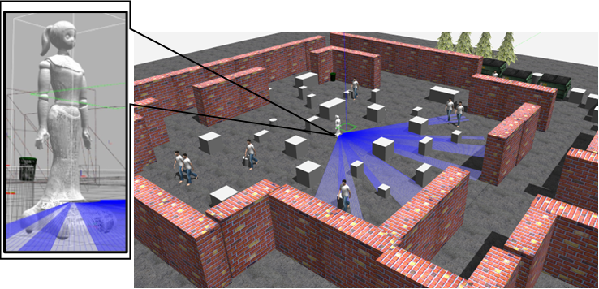
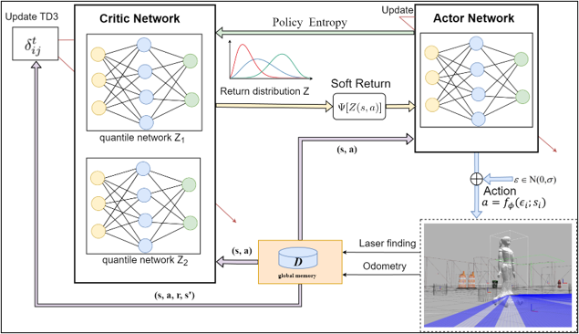
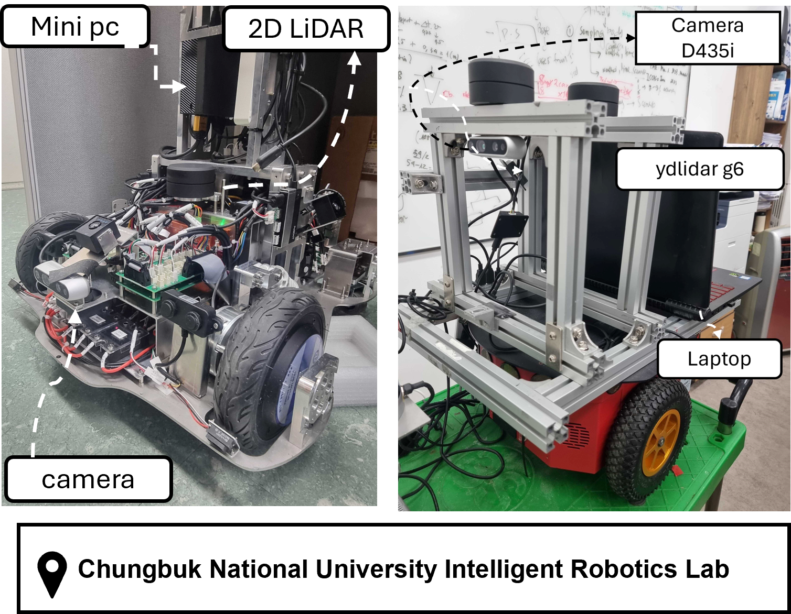
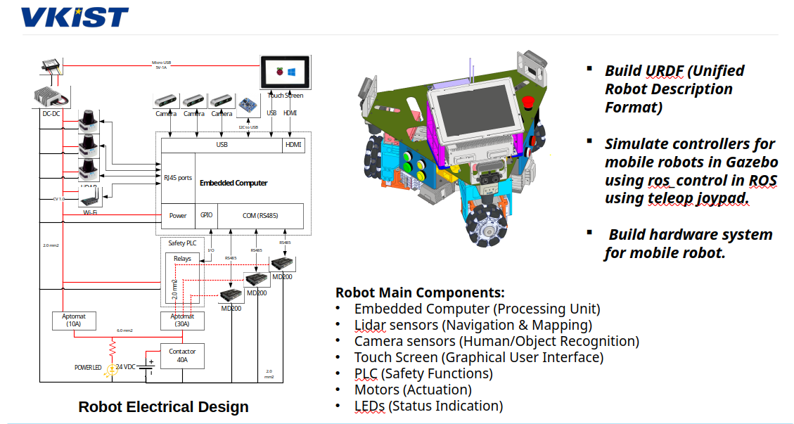
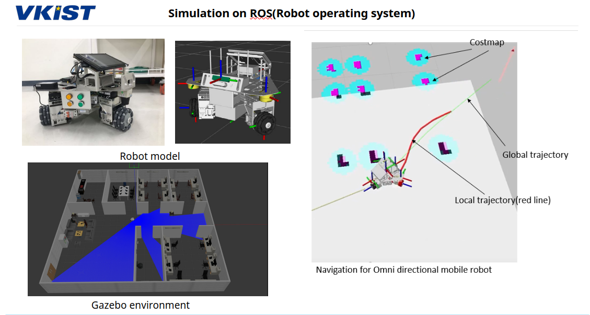
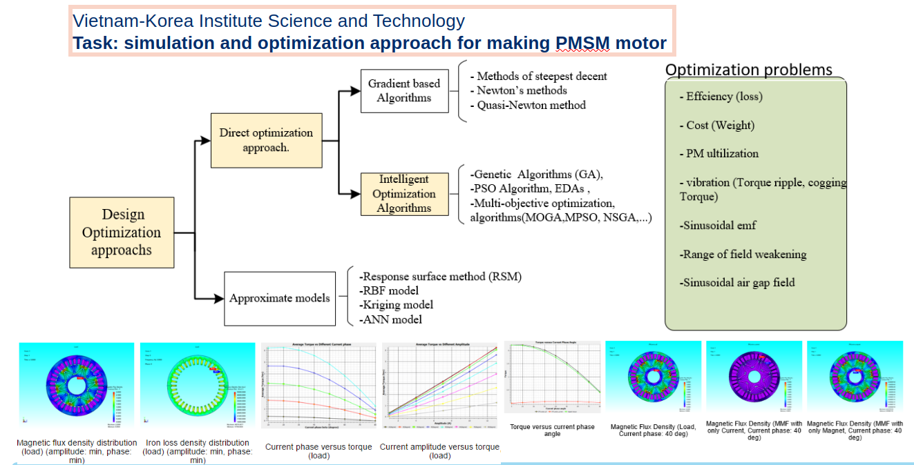
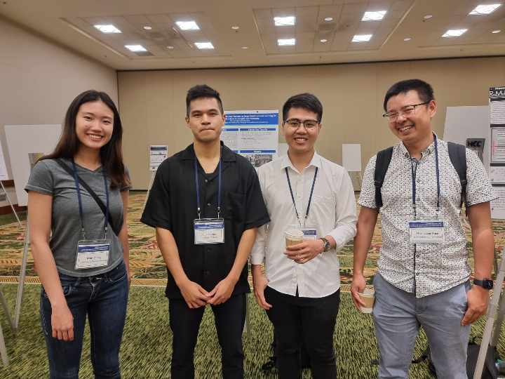
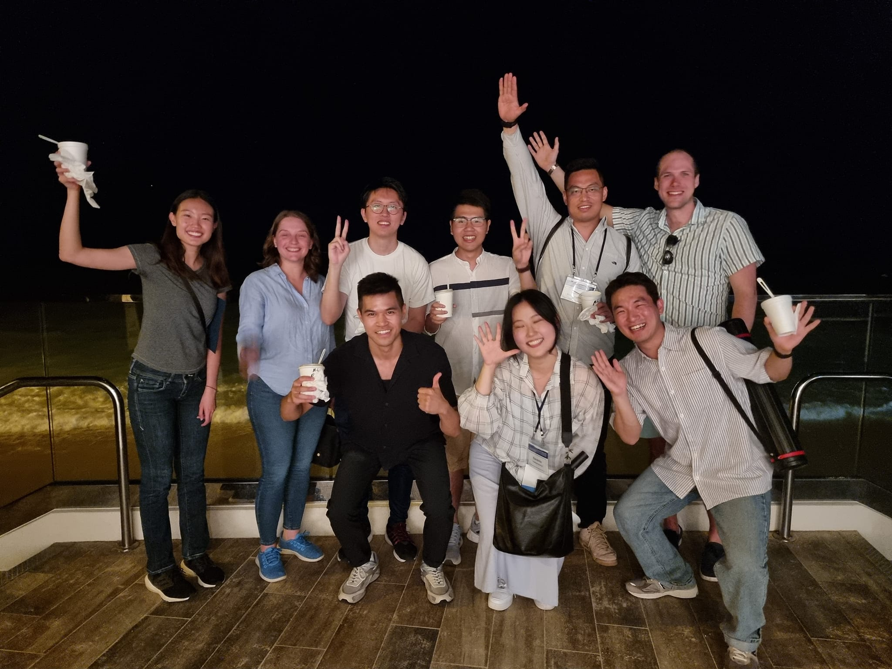
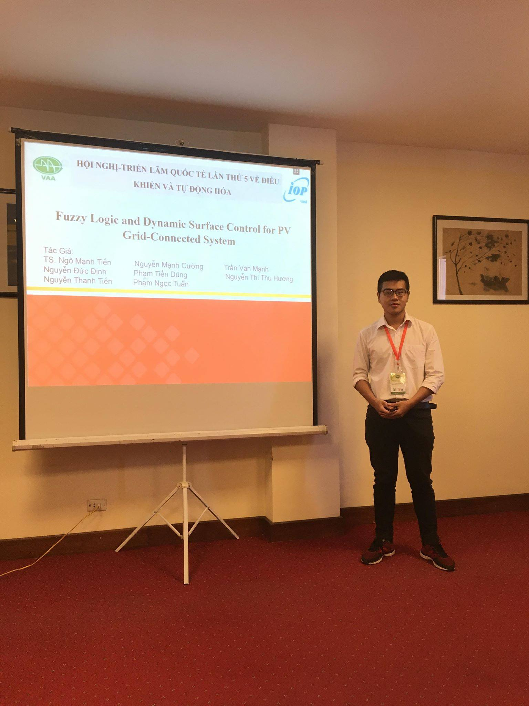
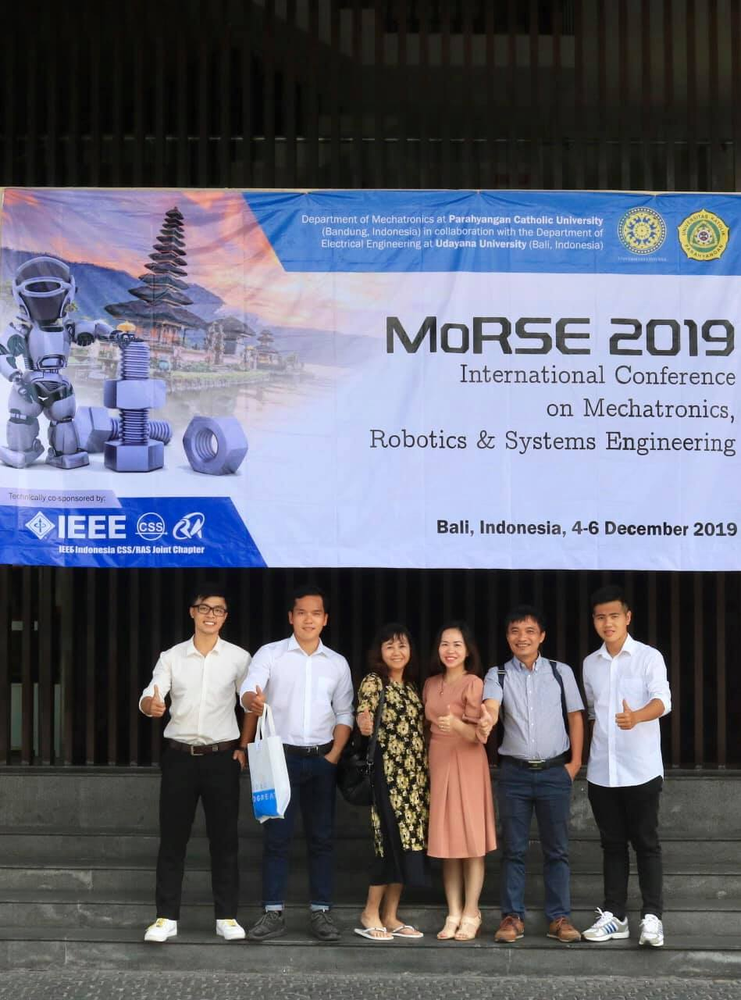

Hello, I am
Tran Van Manh
Robotics Engineer | Deep RL Researcher | Embedded Systems
Hello, I am
Robotics Engineer | Deep RL Researcher | Embedded Systems
Hi, I'm Tran Van Manh - a robotics engineer with more than 5 years of experience in autonomous navigation systems, motion planning, and AI-driven robotic applications. I enjoy exploring new technologies and tackling challenging engineering problems. Skilled in designing and deploying ROS/ROS2-based systems with behavior-tree decision-making, global and local path planning, and real-time motion control on embedded/edge Linux platforms, with a proven record of transferring reinforcement-learning-based navigation policies from simulation to real-world robots (sim-to-real).
DRL, ROS, Path Planning, Sim-to-Real
PyTorch, OpenAI Gym, Policy Networks
STM32, Arduino
MPC, Backstepping, PID, Kalman Filter
Hanoi University of Science and Technology (HUST), Vietnam
GPA: 3.1 / 4.0
🏆 Best Graduation Thesis Defense
RGT, South Korea
Developed a deep reinforcement learning framework for autonomous mobile robot mapless navigation in dynamic environments. Includes sim-to-real transfer.



Research and development of autonomous mobile robot technology for industrial transportation. Designed navigation framework, kinematic models, and hardware systems for a three-wheel omni robot.


Simulation and design of Permanent Magnet Synchronous Motor (PMSM). Designed and simulated magnetic flux distribution for motor optimization.

Research, development and embedded programming applying AI for a humanoid robot (phase 01). Designed an intelligent trajectory algorithm for an Omnidirectional Mobile Robot and the corresponding hardware system.

Physics Institute, VAST, Vietnam
"Mapless Navigation with Distributional Reinforcement Learning" received the Best Paper Award from the Journal of Korea Robotics Society, Korea, 2024.
"Autonomous navigation system in complex environments based on deep RL using selective policy switching for a mobile robot." Co-authored with Prof. Gon-Woo Kim.
View Patent →"Cooperative Deep Reinforcement Learning Policies for Autonomous Navigation in Complex Environments," IEEE Access, vol. 12, pp. 101053–101065, doi: 10.1109/ACCESS.2024.3429230.
Read Paper →Completed Master of Science in Control and Robot Engineering at HUST with a thesis on deep RL-based autonomous navigation.
Evaluated and certified human-robot performance in static and dynamic environments under Korean certification standards.
View Certification →Thesis "Design intelligent trajectory system for Omnidirectional Mobile Robot" awarded Best Graduation Thesis Defense at HUST.

UR 2023 Conference
UR 2023Conference
VCCA 2019 — Vietnam
MoRSE 2019 — BaliFeel free to reach out for collaborations, job opportunities, or just to chat about robotics!